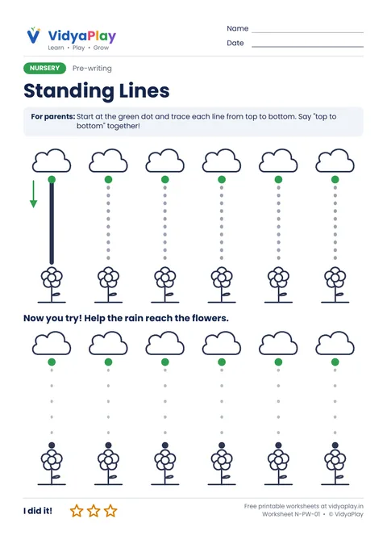
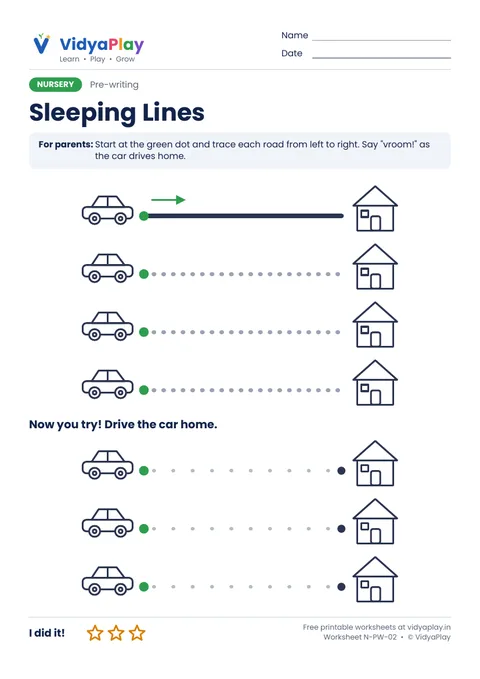
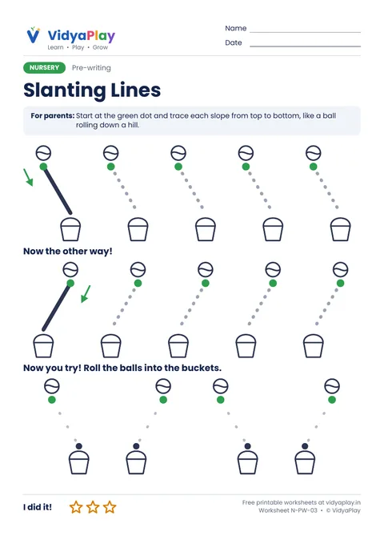
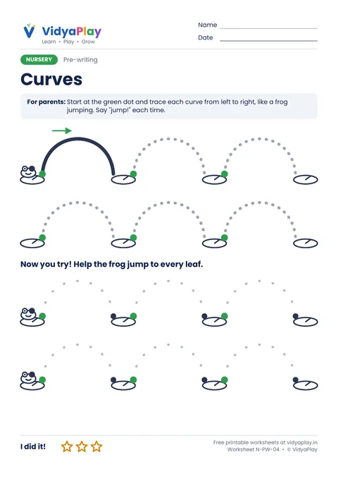
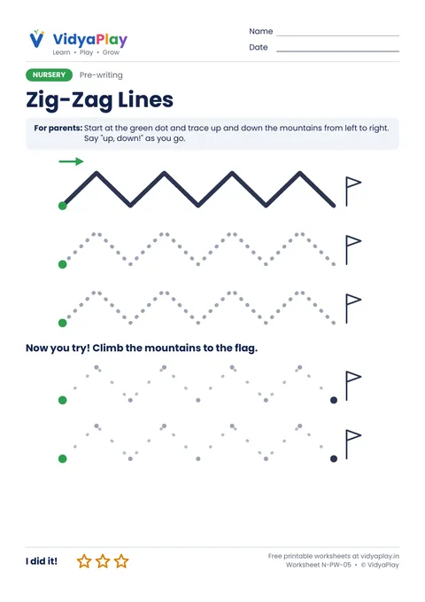
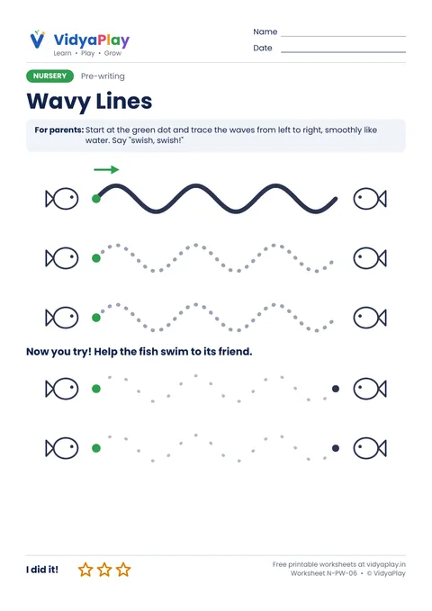

Nursery Pre-writing Worksheets
Before children write letters, they practise six basic lines. These free worksheets make each one a little story, like rain falling or a frog jumping, so practice feels like play.
Free · A4 PDF · Prints in black and white · Ages 2.5 to 4
All 6 worksheets in one file
Print the whole set for a week of practice.
-

N-PW-01Standing Lines
Rain falls from the cloud to the flower. Top to bottom.
Download PDF -

N-PW-02Sleeping Lines
The car drives home. Left to right.
Download PDF -

N-PW-03Slanting Lines
The ball rolls into the bucket. Both slopes.
Download PDF -

N-PW-04Curves
The frog jumps from leaf to leaf.
Download PDF -

N-PW-05Zig-Zag Lines
Climb up and down the mountains to the flag.
Download PDF -

N-PW-06Wavy Lines
The fish swims to its friend, smooth like water.
Download PDF
Tips for parents
- Use a thick crayon or pencil. Little hands grip it more easily.
- Always start at the green dot, and say the direction together.
- Five minutes a day is plenty. Stop while it is still fun.
- Let your child colour the pictures and the stars when they finish.